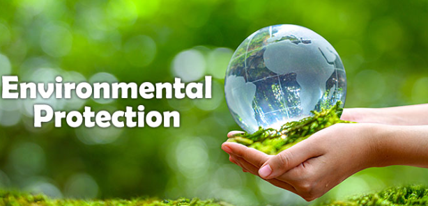
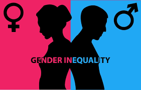
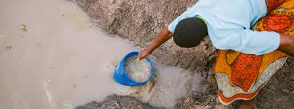

About Sanitation
Sanitation refers to the measures taken to promote hygiene and ensure public health through the proper management of waste and the provision of clean water, as well as maintaining overall cleanliness in communities. It is a critical component of environmental health, influencing the well-being of individuals and societies. Good sanitation reduces the risk of disease transmission and promotes a healthier and more sustainable environment.

Access to Clean Water
Benefits of proper sanitation
1. Improved Public Health
Prevention of Waterborne Diseases: Proper sanitation reduces the risk of diseases caused by contaminated water and poor waste management, such as cholera, diarrhea, dysentery, typhoid, and hepatitis A. These diseases often result from exposure to human waste and untreated water.
Reduced Disease Transmission: When waste is disposed of properly and safely, it limits the exposure of pathogens to the environment and people, significantly lowering the risk of disease outbreaks
Reduced Malnutrition: Good sanitation improves access to clean water and hygiene, which are critical for healthy nutrition. It helps prevent malnutrition by reducing the likelihood of gastrointestinal diseases that can prevent proper nutrient absorption
2. Enhanced Quality of Life
 Improved Hygiene: Proper sanitation, including the availability of clean toilets and washing facilities, leads to better personal hygiene practices. This, in turn, improves individual and family health
Increased Comfort and Dignity: Access to private and clean sanitation facilities enhances comfort and dignity, particularly for women and girls. It also reduces the risk of open defecation, which can lead to humiliation and safety concerns
Protection from Hazards: Proper sanitation facilities help avoid the dangers of disease transmission from human waste, particularly in crowded urban areas or slums
Improved Hygiene: Proper sanitation, including the availability of clean toilets and washing facilities, leads to better personal hygiene practices. This, in turn, improves individual and family health
Increased Comfort and Dignity: Access to private and clean sanitation facilities enhances comfort and dignity, particularly for women and girls. It also reduces the risk of open defecation, which can lead to humiliation and safety concerns
Protection from Hazards: Proper sanitation facilities help avoid the dangers of disease transmission from human waste, particularly in crowded urban areas or slums
3. Economic Benefits
Reduced Healthcare Costs: Proper sanitation helps reduce the incidence of sanitation-related diseases, which translates into fewer hospital visits, lower medical treatment costs, and a reduction in public healthcare spending
Improved Productivity: When people are healthy, they are more productive in their work and school life. Poor sanitation-related diseases can lead to absenteeism from work and school, reducing the overall productivity of individuals and communities
Economic Development: Safe and clean living conditions attract investments, promote tourism, and stimulate local economies by improving infrastructure and creating jobs in sanitation-related industries (e.g., waste management, water treatment)
4.Environmental Protection

Water Quality: Proper sanitation ensures that sewage and waste are treated and safely disposed of, preventing contamination of rivers, lakes, and groundwater. This helps preserve natural water resources, which are essential for drinking, agriculture, and other uses
Soil Fertility: Proper waste treatment can lead to the recycling of nutrients, such as composting organic waste, which improves soil fertility. This is crucial for agricultural practices.
Reduced Pollution: Properly managed sanitation reduces environmental pollution. It prevents the contamination of land and water bodies by untreated sewage and waste, helping to protect wildlife and ecosystems
5. Social and Gender Equality

Improved Safety for Women and Girls: Access to safe sanitation facilities, particularly in public spaces, reduces the risk of sexual harassment and assault, which can occur when women and girls have to use unsafe or public toilets in unsupervised locations.
Menstrual Hygiene Management: Proper sanitation ensures that women and girls have access to the resources they need to manage menstruation hygienically and with dignity, thus promoting their health and education
Social Inclusion: Proper sanitation promotes social equity by providing equal access to sanitation services for all people, regardless of gender, age, disability, or socio-economic status
Poor sanitation
Poor sanitation refers to the lack of proper facilities and practices to safely manage human waste, wastewater, and garbage, leading to the contamination of water, soil, and air. It is a major public health concern and is closely linked to the spread of infectious diseases, environmental degradation, and social inequality. The absence of proper sanitation facilities can result from a variety of factors, including inadequate infrastructure, poor waste management practices, and insufficient resources or awareness. Here are some key issues, impacts, and challenges associated with poor sanitation
KEY ISSUES

Lack of Access to Toilets and Clean Water
.jpg)
Improper Waste Disposal
.jpg)
Inadequate Wastewater Management
Challenges of Poor Sanitation
- Spread of Waterborne Diseases
- Diarrheal Diseases
- Vector-Borne Diseases
- Poor Nutrition and Malnutrition
- Environmental Pollution
- Impact on Tourism: Poor sanitation can deter tourism, which is often a significant economic driver for many regions. The lack of clean and safe environments makes a destination less appealing to tourists, resulting in lost revenue for businesses and local economies.
- Natural Disasters: During natural disasters (e.g., floods, hurricanes, earthquakes), the absence of proper sanitation infrastructure makes it more difficult to provide clean water and waste disposal services to affected populations. This increases the likelihood of disease outbreaks in the aftermath of such events.
- Flooding and Drainage Problems: Poor sanitation, including improper waste management and clogged drains, can exacerbate flooding during heavy rains. When waste is not properly disposed of, drainage systems become blocked, leading to stagnant water that can create breeding grounds for disease vectors like mosquitoes.
Solutions to poor hygiene
Improved Access to Clean Water in way that it may prevent on consumption of contaminated water
Implementing better waste disposal systems
Building and Promoting Access to Sanitation Facilities
Educating communities, particularly in schools and households, on the importance of washing hands with soap and water, and setting up handwashing stations in public areas, especially during outbreaks of diseases.
Governments should build proper drainage systems to avoid waterlogging and promote public awareness of the importance of clean and well-maintained drainage systems